Retenção em tutoriais
Quanto de cada tutorial as pessoas assistem antes de sair.
No Insights: tempo médio de visualização ÷ duração do Reel
Dado real
Mídia kit 2026 Demonstração
Maëra testa maquiagem e skincare em pele de verdade, com luz natural e sem filtro. Mostra a textura de perto, conta o que funcionou e o que não funcionou. Por isso o público volta para perguntar antes de comprar.
@maera.beauty · 300 mil seguidores · maquiagem, skincare e resenhas
Faixas ilustrativas. No kit real, entram os dados do Instagram Insights.
N° 01 Sobre
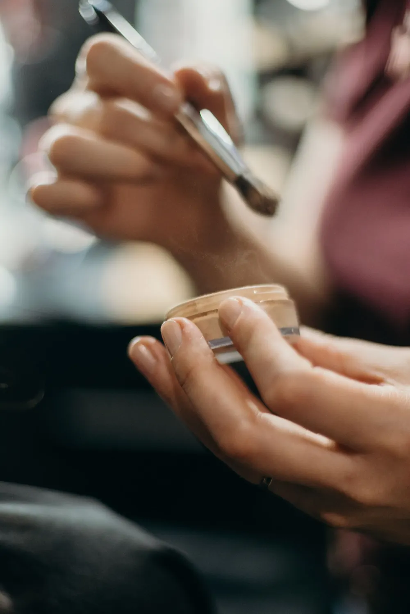
Maëra começou maquiando noivas e hoje ensina no Instagram o que aprendeu no camarim: como escolher o tom da base, como fazer o batom durar, qual skincare vale o preço.
São 300 mil pessoas, a maioria mulheres de 18 a 34 anos, que salvam os vídeos para refazer em casa e perguntam nos comentários antes de comprar. O conteúdo é calmo, de perto e sem exagero: a câmera fica na pele, não no cenário.
Criadora fictícia · texto de demonstração
N° 02 Números
Faixas ilustrativas para demonstração. No kit real, substituir pelos dados do Instagram Insights dos últimos 30 dias.
contas diferentes alcançadas no mês
média dos tutoriais e resenhas
por sequência, com swatch e link
curtidas, comentários, salvamentos e envios
A faixa clara mostra o intervalo esperado para um perfil de 300 mil seguidores de beleza.
Pedir os prints do InsightsN° 03 Beauty Performance
Seguidor não mostra se o conteúdo vende maquiagem. Estes quatro sinais mostram: quanto do tutorial as pessoas assistem, quantas tocam no link, quanto a resenha é salva e quanta gente nova descobre o produto.
Quanto de cada tutorial as pessoas assistem antes de sair.
No Insights: tempo médio de visualização ÷ duração do Reel
Quantas pessoas tocam no link da loja depois do conteúdo.
No Insights: toques no adesivo de link e no link da bio
Quanto as resenhas são salvas e enviadas para amigas.
No Insights: salvamentos e compartilhamentos por resenha
Quanta gente que ainda não segue o perfil conhece o produto.
No Insights: contas alcançadas que não seguem o perfil
Sem números de venda inventados: cada campo recebe o dado real do Insights. No modo criadora, o que você digita fica só neste navegador (demonstração).
N° 04 Swatch Studio
É assim que a Maëra mostra um produto: a cor sozinha, depois em três tons de pele. Troque a cor e a textura para ver.
Rosewood · Batom cremoso · #8E5A55
Formato sugerido
Cores e texturas ilustradas no navegador. No conteúdo real, o swatch é filmado com o produto da marca.
N° 05 Beauty Content Lab
Filtre pelo tipo de conteúdo. Cada formato pode ser feito com o produto da sua marca.
Mostrando 12 formatos
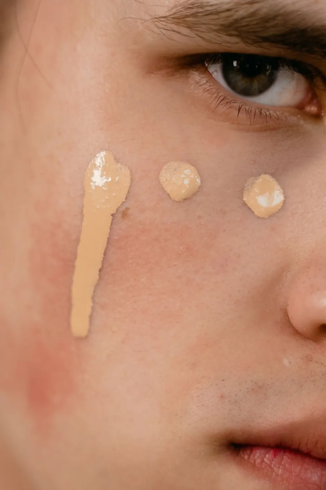
Skin close-up
Reel · 20 a 30 s
Câmera colada no rosto, luz de janela. Mostra subtom, cobertura e acabamento sem filtro.
Pedir este formato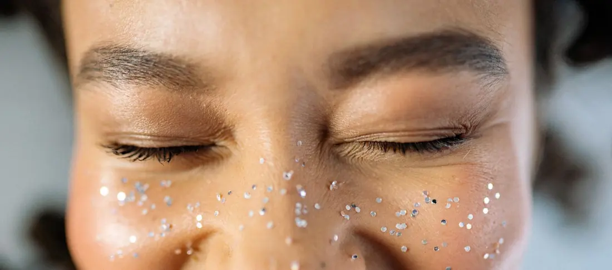
Skin close-up
Carrossel · 6 fotos
Iluminador e glitter em macro: onde aplicar, quanto usar e como fica na foto com flash.
Pedir este formato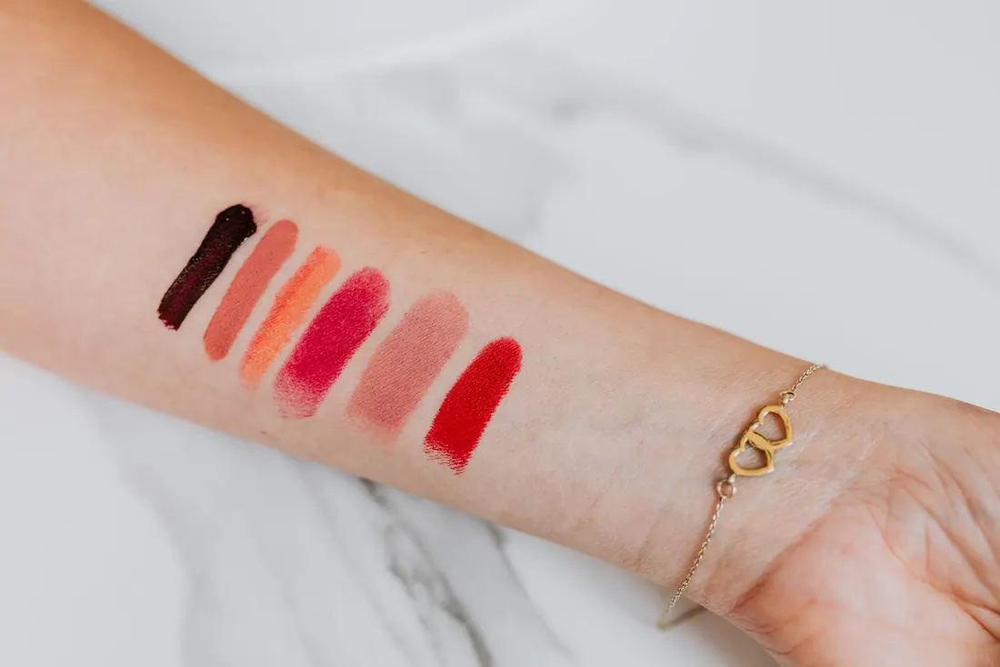
Lip stories
Stories · 5 a 7 telas com link
Swatch de toda a linha, nome de cada cor e enquete para o público votar na favorita.
Pedir este formato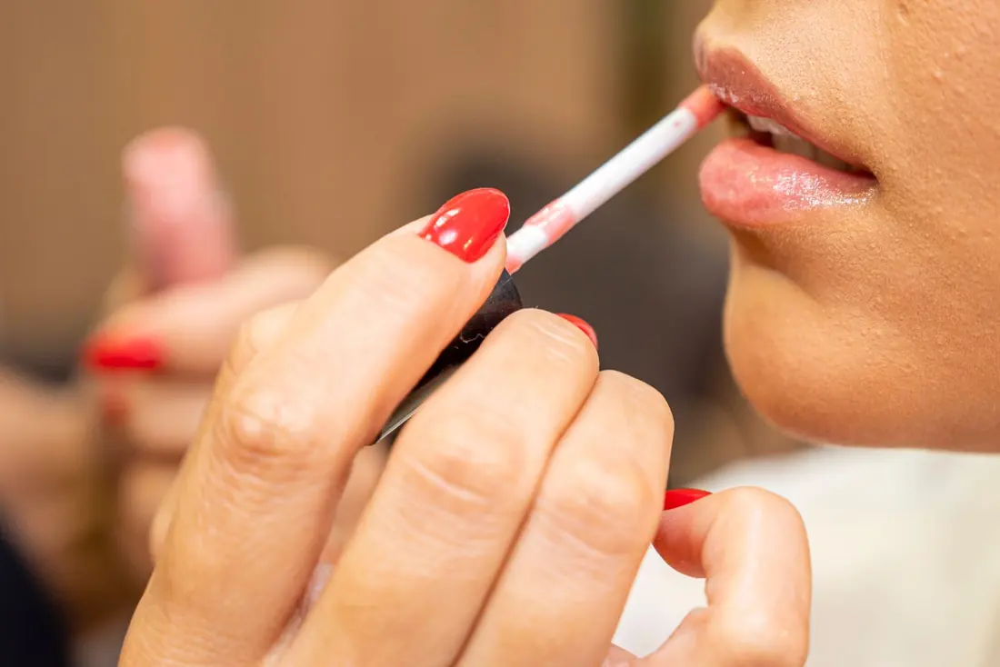
Lip stories
Stories · manhã, almoço e noite
O mesmo batom em três momentos do dia. Mostra transferência, ressecamento e retoque.
Pedir este formato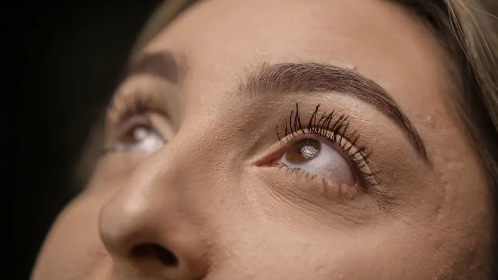
Eye details
Reel · 15 a 25 s
Volume, curvatura e se borra ou não no fim do dia, em close de um olho só.
Pedir este formato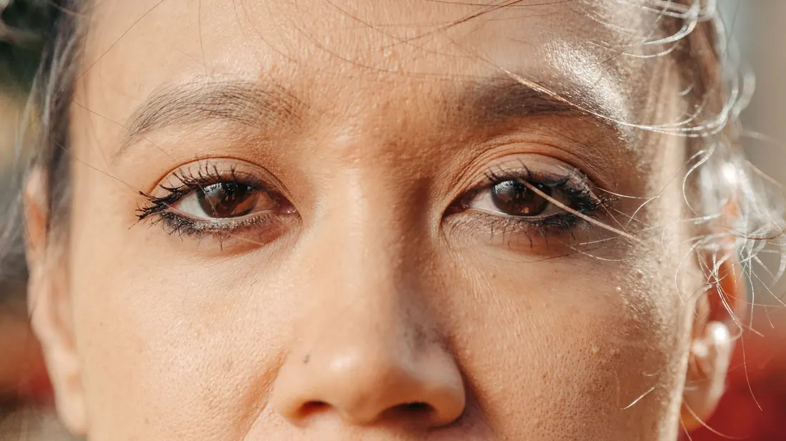
Eye details
Carrossel · antes e depois
Quantidade certa de corretivo para não marcar ruga. Fotos com a mesma luz antes e depois.
Pedir este formato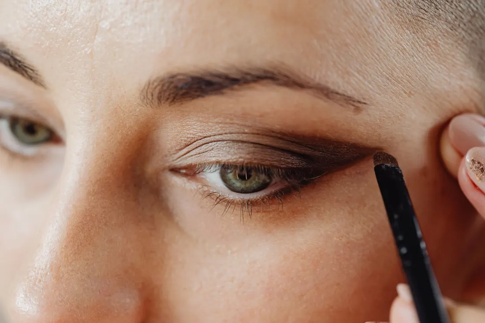
Tutorial
Reel · 45 a 60 s
Passo a passo com o produto da marca na mão, legendado para assistir sem som.
Pedir este formato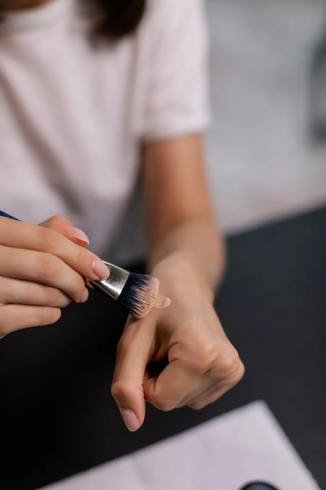
Tutorial
Reel · 30 a 40 s
A dose certa de base, como espalhar e como selar. O erro mais comum aparece antes do acerto.
Pedir este formato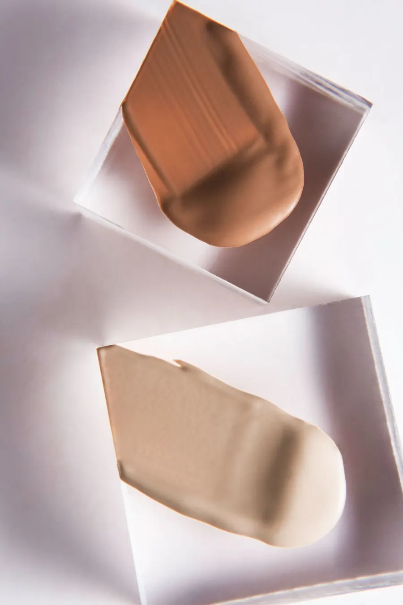
Review
Carrossel · 8 telas
Cobertura, oxidação depois de 4 horas e acabamento. Prós e contras escritos na tela.
Pedir este formato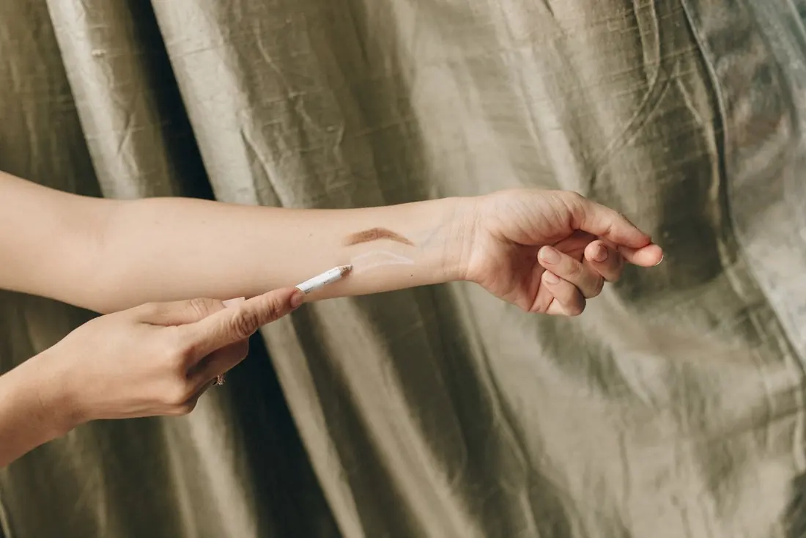
Review
Reel · 30 s
Risco no braço, água e algodão. Mostra o que sai fácil e o que fica.
Pedir este formato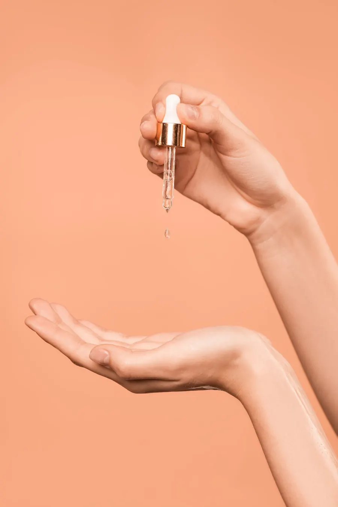
Skincare routine
Reel · 25 a 35 s
A gota em macro, o tempo de absorção e em que passo da rotina entra.
Pedir este formato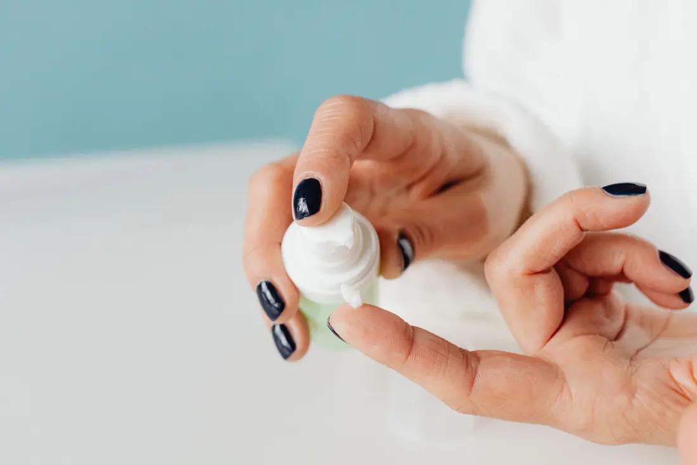
Skincare routine
Stories · série de 4 noites
Limpeza, tônico, sérum e hidratante, com a quantidade de cada um na ponta do dedo.
Pedir este formatoPortfólio conceitual · fotos de banco de imagens (Pexels), sem relação com a criadora
N° 06 Formas de colaboração
Escolha um formato e consulte a agenda. O pedido já chega no formulário de contato com o formato marcado.
1 Reel de 45 a 60 s com o produto em uso e 3 Stories com link.
Entrega em 10 dias úteis
Uso real por duas semanas. 1 Reel e 1 carrossel com prós e contras.
Entrega em 20 dias
5 a 7 Stories com swatch em três tons de pele, enquete e link da loja.
Entrega em 5 dias úteis
Abertura do produto em close, fotos de textura e 1 Reel no dia do lançamento.
Combinar com 30 dias de antecedência
4 semanas de rotina com o produto: 1 Reel por semana e atualização da pele nos Stories.
Duração de 1 mês
Live de 40 minutos respondendo dúvidas do público, com recorte em Reel depois.
Data combinada com a marca
6 fotos de textura e 2 vídeos sem narração para site e anúncio, com licença de 6 meses.
Entrega em 12 dias úteis
3 a 6 meses de presença mensal fixa e exclusividade na categoria do produto.
Contrato de 3 a 6 meses
N° 07 Cases conceituais
Três exemplos de planejamento com marcas fictícias. Mostram o caminho e o que é acompanhado, sem resultados inventados.
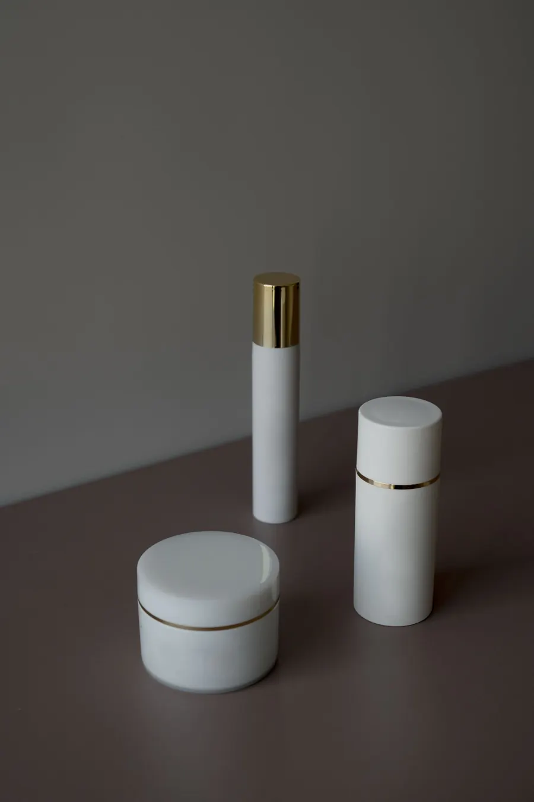
Case conceitual · AURA LAB
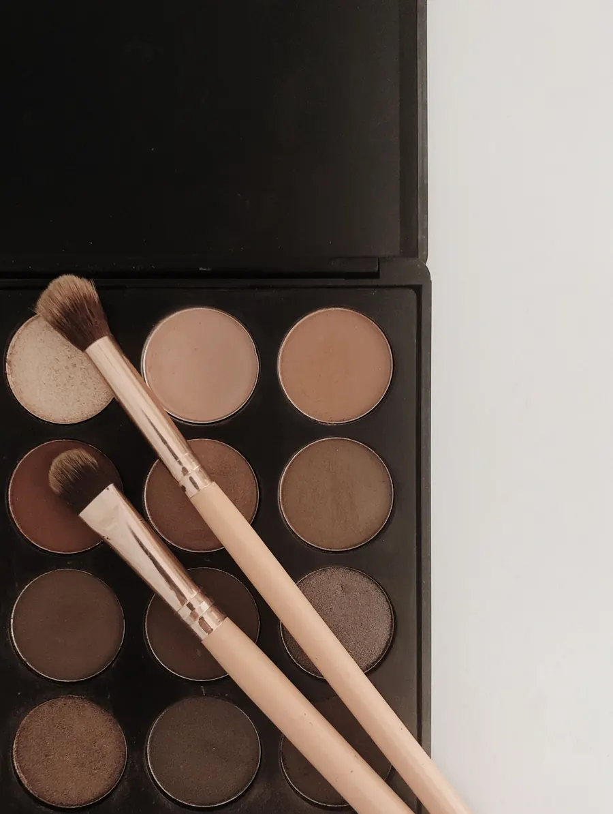
Case conceitual · MIRA COSMETICS
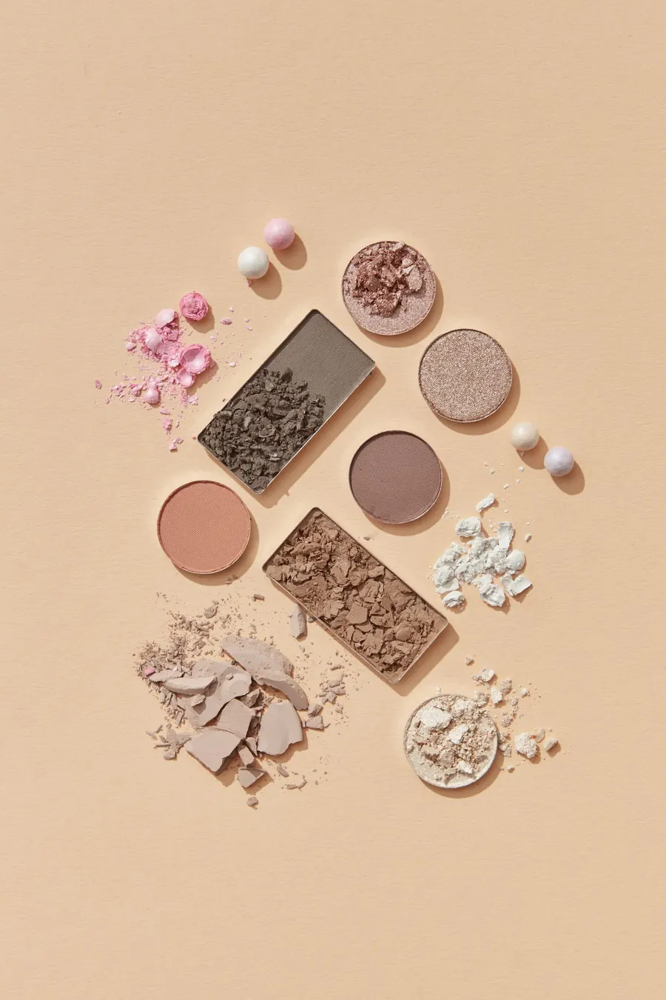
Case conceitual · VELUNE
N° 08 Marcas
Marcas conceituais — demonstração. Nenhuma é marca real; no kit real entram as marcas que já trabalharam com a criadora.
Textos ilustrativos
“Ela mostrou a base em três tons de pele e as perguntas sobre cor diminuíram no nosso atendimento.”
Gerente de marketing, marca conceitual de maquiagem
“A resenha falou também do que não gostou. Foi o conteúdo mais salvo da campanha.”
Coordenadora de influência, marca conceitual de skincare
“Entrega no prazo, roteiro aprovado antes e nenhuma surpresa no dia de postar.”
Analista de mídia, agência conceitual
N° 09 Contato
Responde em até 2 dias úteis. Para lançamento, chame com 30 dias de antecedência.
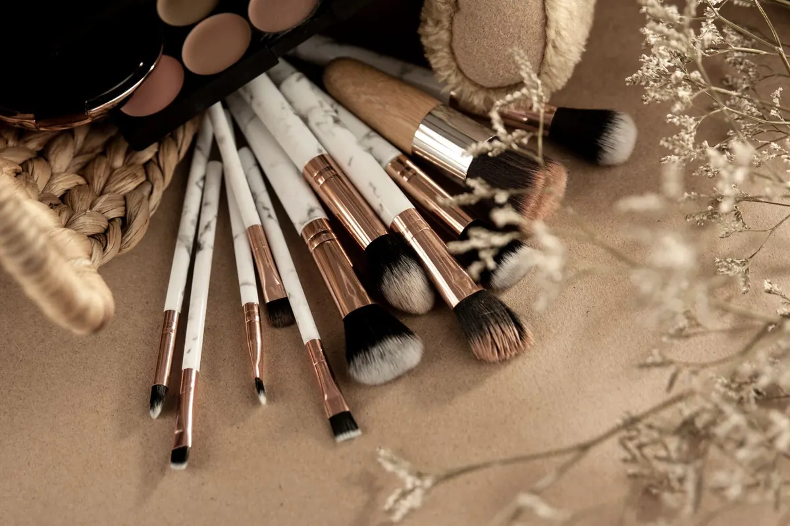
contato@maerabeauty.com.br (e-mail de exemplo)
Chamar no WhatsApp